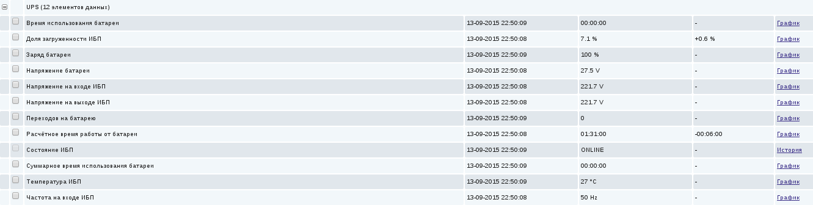

В прошлом я уже подключал ИБП к компьютеру и воспользовался тогда для контроля за состоянием ИБП системой NUT, о чём и написал в заметке NUT и Eaton Powerware 5110. В этот раз мне понадобилось подключить к компьютеру ИБП APC Smart-UPS 1500VA. Попробовал по старой памяти настроить для этого NUT, но драйвер usbhid-ups, работающий с этим ИБП через интерфейс USB, при запуске завершался ошибкой сегментации памяти. При этом XFCE издевательски выводил уведомление о полной зарядке батареи в правом верхнем углу экрана, общаясь с ИБП через шину dbus и демон upowerd.
Попробовал воспользоваться переходником USB-RS232 (COM-порт поддерживается драйвером apcsmart), но после подключения к компьютеру ИБП пискнул и отключился вместе со всей нагрузкой. Собственно, можно было ожидать чего-то подобного, т.к. в конфигурации драйвера apcsmart есть не один вариант кабеля RS232. Стало понятно, что переходник на USB, по всей видимости, не поможет.
Я знал о существовании apcupsd, но пользоваться им не хотелось из-за его специализированности на ИБП только одного производителя. Но тут деваться стало некуда и я решил всё-таки настроить его.
Итак, перво-наперво, установим apcupsd:
# apt-get install apcupsd
Открываем файл /etc/apcupsd/apcupsd.conf и редактируем, выставляя следующие настройки:
UPSCABLE usb UPSTYPE usb DEVICE POLLTIME 10 # По умолчанию 60 BATTERYLEVEL 0 # По умолчанию 5% MINUTES 3 TIMEOUT 0 BEEPSTATE N # Отключаем писк ИБП
apcupsd выключает компьютер при наступлении одного из условий:
Если какая-либо из этих настроек имеет значение 0, она не учитывается при принятии решения о выключении компьютера.
Теперь откроем файл /etc/default/apcupsd и включим демон, вписав в файл настройку:
ISCONFIGURED=yes
Теперь можно включить и запустить демона через systemd:
# systemctl enable apcupsd.service # systemctl start apcupsd.service
Поскольку мы не меняли сетевые настройки, демон запустится и будет ожидать подключений на TCP-порту 3551 на локальном IP-адресе 127.0.0.1.
Узнать состояние ИБП можно с помощью программы-клиента apcaccess. Можно запускать её и от имени обычного пользователя, ведь для установки сетевого подключения не нужно обладать особыми правами, но стоит учитывать, что программа лежит в каталоге /sbin, поэтому для обычного пользователя доступна только при указании полного пути:
$ /sbin/apcaccess
Программа выводит различные данные ИБП в виде списка имён параметров и их значений. У программы есть опция -u, отключающая отображение единиц измерения. С помощью опции -p можно вывести значение только одного параметра, указав после опции имя параметра. Воспользуемся этим чтобы наблюдать за состоянием ИБП при помощи системы мониторинга Zabbix.
Предполагается, что на компьютере уже установлен и настроен Zabbix-агент. Добавим в конфигурацию агента "пользовательский параметр". Сделать этом можно либо напрямую отредактировав файл /etc/zabbix/zabbix_agentd.conf, либо создав новый файл в каталоге /etc/zabbix/zabbix_agentd.d/ специально для этого пользовательского параметра. Впишем строчку:
UserParameter=ups[*],/sbin/apcaccess -u -p $1
Перезапустим Zabbix-агента, чтобы новые настройки вступили в силу:
# systemctl restart zabbix-agent.service
Я подготовил два варианта шаблонов - один с элементами данных "Zabbix-агент", а второй - с элементами данных "Zabbix-агент (активный)".
Фрагмент страницы истории:
Фрагмент шаблона со списком триггеров:

Состав триггеров и приоритеты соответствуют моим нуждам, вы можете настроить их по-другому.
В ИБП предусмотрен режим "байпас" (более привычное название - шунт), то есть режим передачи напряжения со входа на выход напрямую. Если с напряжением в розетке всё в порядке, то ИБП работает именно в этом режиме, выполняя лишь функцию сетевого фильтра. При выходе напряжения за установленные пределы включается режим стабилизации. Если напряжение пропадает полностью, то ИБП начинает работать от батареи. Работа от батареи сопровождается довольно заметным шумом вентиляторов, с чем можно смириться, т.к. эта ситуация является аварийной, а в нормальном режиме "байпас" вентиляторы не работают.